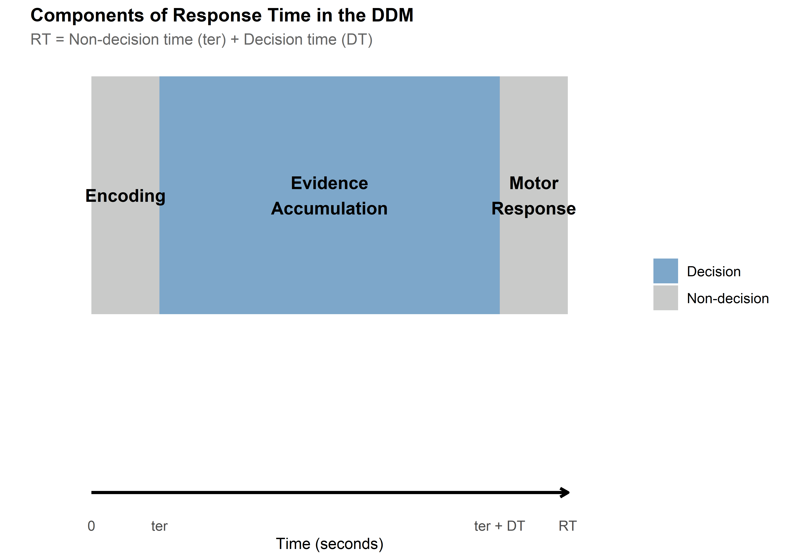
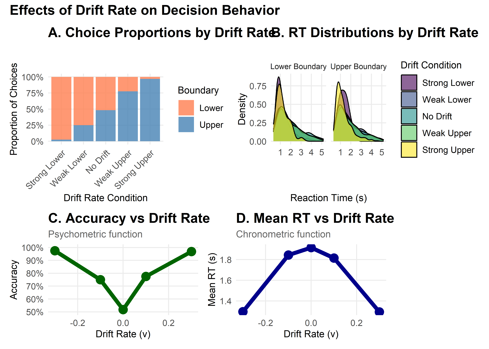
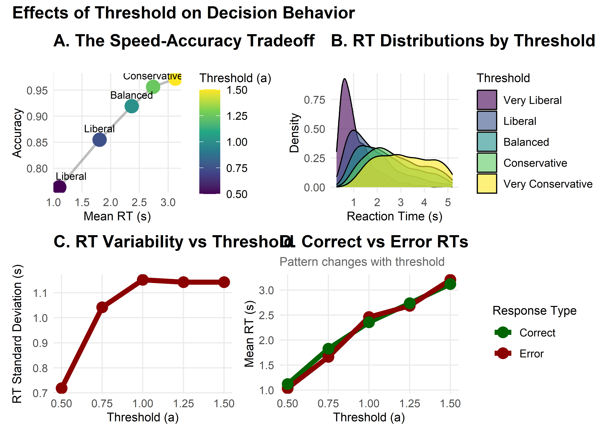
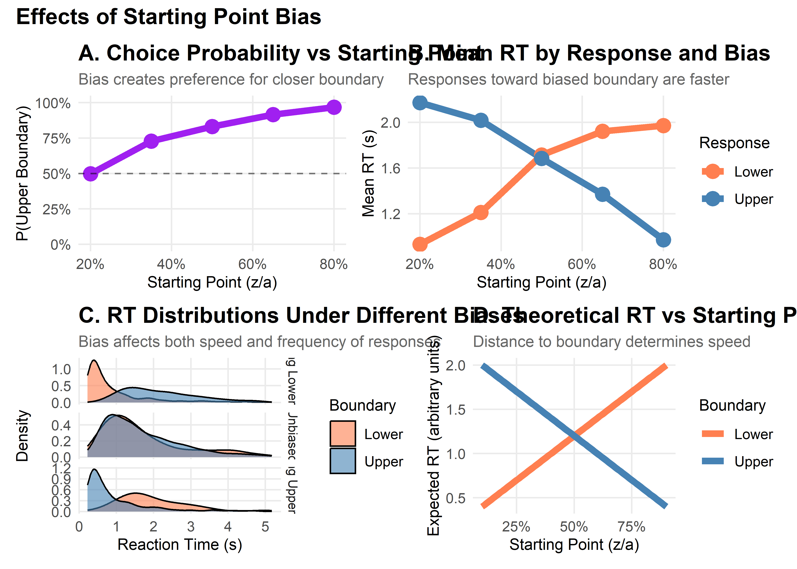
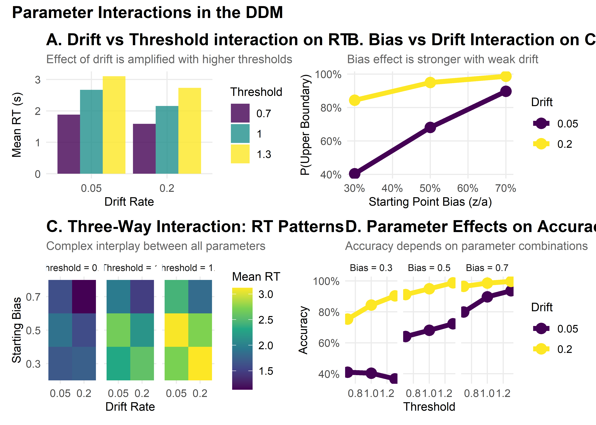

Understanding DDM Parameters: A Visual Guide to Decision-Making Components
Dogukan Nami Oztas
2025-05-16
Source:vignettes/04_exploring_ddm_parameters.Rmd
04_exploring_ddm_parameters.RmdLearning Objectives
By the end of this tutorial, you will:
Understand how each DDM parameter influences decision outcomes
Visualize the effects of parameter changes on RT distributions and accuracy
Interpret parameter values in cognitive terms
Predict how parameter combinations affect behavior
Apply this knowledge to design and interpret DDM studies
Introduction: The Anatomy of a Decision
Imagine you’re playing a simple video game where dots move across the screen, and you must quickly decide: are most dots moving left or right? This seemingly simple task involves multiple cognitive processes:
Evidence accumulation: Your brain samples information about dot motion
Decision threshold: You need “enough” evidence before committing
Starting bias: You might expect one direction more than another
Motor execution: Physical time to press the response button
The Diffusion Decision Model (DDM) elegantly captures these processes with just a few parameters. Let’s explore each one!
# Create a conceptual diagram of the DDM process
create_ddm_conceptual_diagram <- function() {
# Create timeline data
timeline_data <- data.frame(
stage = c("Encoding", "Evidence\nAccumulation", "Motor\nResponse"),
start = c(0, 0.1, 0.6),
end = c(0.1, 0.6, 0.7),
y = c(1, 1, 1),
color = c("Non-decision", "Decision", "Non-decision")
)
# Create the plot
ggplot(timeline_data) +
geom_rect(aes(xmin = start, xmax = end, ymin = 0.8, ymax = 1.2, fill = color),
alpha = 0.7) +
geom_text(aes(x = (start + end)/2, y = y, label = stage),
size = 4, fontface = "bold") +
geom_segment(aes(x = 0, xend = 0.7, y = 0.5, yend = 0.5),
arrow = arrow(length = unit(0.2, "cm")),
size = 1) +
scale_x_continuous(breaks = c(0, 0.1, 0.6, 0.7),
labels = c("0", "ter", "ter + DT", "RT"),
limits = c(-0.05, 0.75)) +
scale_fill_manual(values = c("Decision" = "steelblue",
"Non-decision" = "gray70")) +
labs(title = "Components of Response Time in the DDM",
subtitle = "RT = Non-decision time (ter) + Decision time (DT)",
x = "Time (seconds)",
y = "") +
theme(axis.text.y = element_blank(),
axis.ticks.y = element_blank(),
panel.grid = element_blank(),
legend.title = element_blank(),
plot.title = element_text(size = 12),
plot.subtitle = element_text(size = 10))
}
create_ddm_conceptual_diagram()
Setting Up Our Baseline Model
Let’s establish a baseline set of parameters that we’ll use throughout this tutorial:
# Define baseline parameters with clear documentation
baseline_params <- list(
# Core parameters
mean_v = 0.15, # Moderate positive drift (slightly favors upper boundary)
a = 0.7, # Moderate threshold (balance of speed/accuracy)
mean_z = 0.35, # Unbiased starting point (middle of threshold)
# Noise and timing
s = 0.25, # Within-trial noise (standard for scaling)
mean_ter = 0.2, # 200ms non-decision time
# Variability parameters (set to 0 for baseline)
sv = 0, # No drift variability
sz = 0, # No starting point variability
st0 = 0, # No non-decision time variability
# Simulation parameters
dt = 0.001, # High precision time step
n_trials = 1000 # Sufficient for stable distributions
)
# Create a summary table
param_table <- data.frame(
Parameter = c("Drift rate (v)", "Threshold (a)", "Starting point (z)",
"Noise (s)", "Non-decision time (ter)"),
Symbol = c("v", "a", "z", "s", "ter"),
Baseline = c(0.15, 1.0, 0.5, 0.1, 0.2),
Interpretation = c(
"Quality of evidence (positive = favors upper)",
"Amount of evidence required",
"Initial bias (0.5 = unbiased)",
"Moment-to-moment variability",
"Time for encoding + motor response"
)
)
kable(param_table, caption = "Baseline DDM Parameters")| Parameter | Symbol | Baseline | Interpretation |
|---|---|---|---|
| Drift rate (v) | v | 0.15 | Quality of evidence (positive = favors upper) |
| Threshold (a) | a | 1.00 | Amount of evidence required |
| Starting point (z) | z | 0.50 | Initial bias (0.5 = unbiased) |
| Noise (s) | s | 0.10 | Moment-to-moment variability |
| Non-decision time (ter) | ter | 0.20 | Time for encoding + motor response |
Now let’s simulate our baseline model:
set.seed(2024) # For reproducibility
# Simulate baseline data
baseline_data <- do.call(
simulate_diffusion_experiment_variable,
c(baseline_params)
)
# Add descriptive labels
baseline_data$condition <- "Baseline"
baseline_data$param_set <- "Baseline"
# Summary statistics
baseline_summary <- baseline_data %>%
filter(!is.na(choice)) %>%
summarise(
n_valid = n(),
prop_upper = mean(choice == 1),
mean_rt = mean(rt),
median_rt = median(rt),
rt_10 = quantile(rt, 0.1),
rt_90 = quantile(rt, 0.9),
.groups = 'drop'
)
cat("Baseline Model Summary:\n")## Baseline Model Summary:
cat("- Valid trials:", baseline_summary$n_valid, "\n")## - Valid trials: 972
cat("- Upper boundary choices:", percent(baseline_summary$prop_upper), "\n")## - Upper boundary choices: 84%## - Mean RT: 1.712 s
cat("- RT range (10th-90th percentile):",
round(baseline_summary$rt_10, 3), "-",
round(baseline_summary$rt_90, 3), "s\n")## - RT range (10th-90th percentile): 0.673 - 3.178 sPart 1: Drift Rate (v) - The Engine of Evidence
The drift rate represents how quickly and in which direction evidence accumulates. Think of it as the “signal strength” in your decision.
Cognitive Interpretation
-
Magnitude (|v|): Task difficulty or stimulus quality
High |v| → Clear evidence → Fast, accurate decisions
Low |v| → Ambiguous evidence → Slow, error-prone decisions
-
Sign: Direction of evidence
Positive v → Evidence favors upper boundary
Negative v → Evidence favors lower boundary
v = 0 → No systematic evidence (pure guessing)
Exploring Drift Rate Effects
# Define drift rate values to explore
drift_values <- c(-0.3, -0.1, 0, 0.1, 0.3)
drift_labels <- c("Strong Lower", "Weak Lower", "No Drift",
"Weak Upper", "Strong Upper")
# Simulate data for different drift rates
drift_data_list <- list()
for (i in seq_along(drift_values)) {
params <- baseline_params
params$mean_v <- drift_values[i]
set.seed(2024 + i)
sim_data <- do.call(
simulate_diffusion_experiment_variable,
c(params)
)
sim_data$drift_rate <- drift_values[i]
sim_data$drift_label <- factor(drift_labels[i], levels = drift_labels)
drift_data_list[[i]] <- sim_data
}
drift_data <- bind_rows(drift_data_list)
# Create comprehensive visualization
p1 <- ggplot(drift_data %>% filter(!is.na(choice)),
aes(x = drift_label, fill = factor(choice))) +
geom_bar(position = "fill", alpha = 0.8) +
scale_fill_manual(values = c("0" = "coral", "1" = "steelblue"),
labels = c("Lower", "Upper")) +
scale_y_continuous(labels = percent) +
labs(title = "A. Choice Proportions by Drift Rate",
subtitle = "Higher drift → More upper boundary choices",
x = "Drift Rate Condition",
y = "Proportion of Choices",
fill = "Boundary") +
theme(axis.text.x = element_text(angle = 45, hjust = 1))
p2 <- ggplot(drift_data %>% filter(!is.na(choice)),
aes(x = rt, fill = drift_label)) +
geom_density(alpha = 0.6) +
facet_wrap(~ factor(choice, labels = c("Lower Boundary", "Upper Boundary"))) +
scale_fill_viridis_d() +
#coord_cartesian(xlim = c(0, 2)) +
labs(title = "B. RT Distributions by Drift Rate",
subtitle = "Stronger drift → Faster decisions",
x = "Reaction Time (s)",
y = "Density",
fill = "Drift Condition")
# Summary statistics plot
drift_summary <- drift_data %>%
filter(!is.na(choice)) %>%
group_by(drift_rate, drift_label) %>%
summarise(
accuracy = mean(choice == (drift_rate > 0)),
mean_rt = mean(rt),
.groups = 'drop'
)
p3 <- ggplot(drift_summary, aes(x = drift_rate)) +
geom_line(aes(y = accuracy), color = "darkgreen", size = 2) +
geom_point(aes(y = accuracy), color = "darkgreen", size = 4) +
scale_y_continuous(labels = percent, limits = c(0.5, 1)) +
labs(title = "C. Accuracy vs Drift Rate",
subtitle = "Psychometric function",
x = "Drift Rate (v)",
y = "Accuracy")
p4 <- ggplot(drift_summary, aes(x = drift_rate)) +
geom_line(aes(y = mean_rt), color = "darkblue", size = 2) +
geom_point(aes(y = mean_rt), color = "darkblue", size = 4) +
labs(title = "D. Mean RT vs Drift Rate",
subtitle = "Chronometric function",
x = "Drift Rate (v)",
y = "Mean RT (s)")
# Combine plots
(p1 + p2) / (p3 + p4) +
plot_annotation(
title = "Effects of Drift Rate on Decision Behavior",
theme = theme(plot.title = element_text(size = 14, face = "bold"))
)
Part 2: Threshold Separation (a) - The Speed-Accuracy Tradeoff
The threshold separation controls how much evidence is required before making a decision. It’s the primary parameter controlling the speed-accuracy tradeoff.
Cognitive Interpretation
-
High threshold (large a): Conservative strategy
More evidence required → Slower but more accurate
“I want to be sure before I respond”
-
Low threshold (small a): Liberal strategy
Less evidence required → Faster but more error-prone
“I need to respond quickly”
# Define threshold values to explore
threshold_values <- c(0.5, 0.75, 1.0, 1.25, 1.5)
threshold_labels <- c("Very Liberal", "Liberal", "Balanced",
"Conservative", "Very Conservative")
# Simulate data for different thresholds
threshold_data_list <- list()
for (i in seq_along(threshold_values)) {
params <- baseline_params
params$a <- threshold_values[i]
params$mean_z <- threshold_values[i] / 2 # Keep unbiased
set.seed(3024 + i)
sim_data <- do.call(
simulate_diffusion_experiment_variable,
c(params)
)
sim_data$threshold <- threshold_values[i]
sim_data$threshold_label <- factor(threshold_labels[i], levels = threshold_labels)
threshold_data_list[[i]] <- sim_data
}
threshold_data <- bind_rows(threshold_data_list)
# Create visualizations
# Speed-Accuracy Tradeoff plot
threshold_summary <- threshold_data %>%
filter(!is.na(choice)) %>%
group_by(threshold, threshold_label) %>%
summarise(
accuracy = mean(choice == 1), # Since v > 0
mean_rt = mean(rt),
rt_variability = sd(rt),
.groups = 'drop'
)
p1 <- ggplot(threshold_summary, aes(x = mean_rt, y = accuracy)) +
geom_path(color = "gray50", size = 1, alpha = 0.5) +
geom_point(aes(color = threshold), size = 5) +
geom_text(aes(label = threshold_label),
vjust = -1, hjust = 0.5, size = 3) +
scale_color_viridis_c(name = "Threshold (a)") +
#scale_y_continuous(labels = percent, limits = c(0.5, 1)) +
labs(title = "A. The Speed-Accuracy Tradeoff",
subtitle = "Higher thresholds → Slower but more accurate responses",
x = "Mean RT (s)",
y = "Accuracy")
# RT distributions
p2 <- ggplot(threshold_data %>% filter(!is.na(choice)),
aes(x = rt, fill = threshold_label)) +
geom_density(alpha = 0.6) +
scale_fill_viridis_d() +
#coord_cartesian(xlim = c(0, 3)) +
labs(title = "B. RT Distributions by Threshold",
subtitle = "Higher thresholds → More spread out distributions",
x = "Reaction Time (s)",
y = "Density",
fill = "Threshold")
# RT variability
p3 <- ggplot(threshold_summary, aes(x = threshold, y = rt_variability)) +
geom_line(color = "darkred", size = 2) +
geom_point(color = "darkred", size = 4) +
labs(title = "C. RT Variability vs Threshold",
subtitle = "Higher thresholds → More variable RTs",
x = "Threshold (a)",
y = "RT Standard Deviation (s)")
# Error RT analysis
error_analysis <- threshold_data %>%
filter(!is.na(choice)) %>%
group_by(threshold, threshold_label, choice) %>%
summarise(
mean_rt = mean(rt),
.groups = 'drop'
) %>%
mutate(response_type = ifelse(choice == 1, "Correct", "Error"))
p4 <- ggplot(error_analysis, aes(x = threshold, y = mean_rt,
color = response_type)) +
geom_line(size = 2) +
geom_point(size = 4) +
scale_color_manual(values = c("Correct" = "darkgreen", "Error" = "darkred")) +
labs(title = "D. Correct vs Error RTs",
subtitle = "Pattern changes with threshold",
x = "Threshold (a)",
y = "Mean RT (s)",
color = "Response Type")
# Combine plots
(p1 + p2) / (p3 + p4) +
plot_annotation(
title = "Effects of Threshold on Decision Behavior",
theme = theme(plot.title = element_text(size = 14, face = "bold"))
)
Part 3: Starting Point (z) - Decision Bias
The starting point determines where evidence accumulation begins, creating a bias toward one response.
Cognitive Interpretation
z = a/2: Unbiased (equidistant from both boundaries)
z > a/2: Biased toward upper boundary
z < a/2: Biased toward lower boundary
This can reflect:
Prior expectations (“I expect to see motion to the right”)
Reward asymmetries (“Correct responses pay more than errors”)
Strategic biases (“When unsure, guess ‘yes’”)
# Define starting point values
z_proportions <- c(0.2, 0.35, 0.5, 0.65, 0.8)
z_labels <- c("Strong Lower Bias", "Moderate Lower Bias", "Unbiased",
"Moderate Upper Bias", "Strong Upper Bias")
# Simulate data
z_data_list <- list()
for (i in seq_along(z_proportions)) {
params <- baseline_params
params$mean_z <- z_proportions[i] * params$a
set.seed(4024 + i)
sim_data <- do.call(
simulate_diffusion_experiment_variable,
c(params)
)
sim_data$z_prop <- z_proportions[i]
sim_data$z_label <- factor(z_labels[i], levels = z_labels)
z_data_list[[i]] <- sim_data
}
z_data <- bind_rows(z_data_list)
# Visualizations
# Choice proportions
z_summary <- z_data %>%
filter(!is.na(choice)) %>%
group_by(z_prop, z_label) %>%
summarise(
prop_upper = mean(choice == 1),
mean_rt_upper = mean(rt[choice == 1]),
mean_rt_lower = mean(rt[choice == 0]),
.groups = 'drop'
)
p1 <- ggplot(z_summary, aes(x = z_prop, y = prop_upper)) +
geom_line(color = "purple", size = 2) +
geom_point(color = "purple", size = 4) +
geom_hline(yintercept = 0.5, linetype = "dashed", alpha = 0.5) +
scale_y_continuous(labels = percent, limits = c(0, 1)) +
scale_x_continuous(labels = percent) +
labs(title = "A. Choice Probability vs Starting Point",
subtitle = "Bias creates preference for closer boundary",
x = "Starting Point (z/a)",
y = "P(Upper Boundary)")
# RT by response
z_rt_data <- z_data %>%
filter(!is.na(choice)) %>%
group_by(z_prop, z_label, choice) %>%
summarise(mean_rt = mean(rt), .groups = 'drop') %>%
mutate(response = ifelse(choice == 1, "Upper", "Lower"))
p2 <- ggplot(z_rt_data, aes(x = z_prop, y = mean_rt, color = response)) +
geom_line(size = 2) +
geom_point(size = 4) +
scale_color_manual(values = c("Upper" = "steelblue", "Lower" = "coral")) +
scale_x_continuous(labels = percent) +
labs(title = "B. Mean RT by Response and Bias",
subtitle = "Responses toward biased boundary are faster",
x = "Starting Point (z/a)",
y = "Mean RT (s)",
color = "Response")
# Detailed RT distributions for extreme biases
p3 <- z_data %>%
filter(!is.na(choice), z_prop %in% c(0.2, 0.5, 0.8)) %>%
ggplot(aes(x = rt, fill = factor(choice))) +
geom_density(alpha = 0.6) +
facet_grid(z_label ~ ., scales = "free_y") +
scale_fill_manual(values = c("0" = "coral", "1" = "steelblue"),
labels = c("Lower", "Upper")) +
#coord_cartesian(xlim = c(0, 2)) +
labs(title = "C. RT Distributions Under Different Biases",
subtitle = "Bias affects both speed and frequency of responses",
x = "Reaction Time (s)",
y = "Density",
fill = "Boundary")
# Bias effect visualization
p4 <- expand.grid(
z_prop = seq(0.1, 0.9, 0.01),
boundary = c("Lower", "Upper")
) %>%
mutate(
distance = ifelse(boundary == "Upper", 1 - z_prop, z_prop),
expected_rt = 0.2 + distance * 2 # Simplified model
) %>%
ggplot(aes(x = z_prop, y = expected_rt, color = boundary)) +
geom_line(size = 2) +
scale_color_manual(values = c("Upper" = "steelblue", "Lower" = "coral")) +
scale_x_continuous(labels = percent) +
labs(title = "D. Theoretical RT vs Starting Point",
subtitle = "Distance to boundary determines speed",
x = "Starting Point (z/a)",
y = "Expected RT (arbitrary units)",
color = "Boundary")
# Combine
(p1 + p2) / (p3 + p4) +
plot_annotation(
title = "Effects of Starting Point Bias",
theme = theme(plot.title = element_text(size = 14, face = "bold"))
)
Part 4: Parameter Interactions
Parameters don’t work in isolation. Let’s explore some important interactions:
Understanding Parameter Interactions
Before diving into specific interactions, it’s important to note that real-world decisions often show trial-to-trial variability. The DDM captures this through three variability parameters:
- Drift variability (sv): Fluctuations in evidence quality
- Starting point variability (sz): Changes in initial bias
- Non-decision time variability (st0): Variations in motor preparation
These variability parameters can significantly affect how the core parameters interact. For example, high drift variability can make the effects of bias more pronounced, while high starting point variability can lead to more errors.
# Create a grid of parameter combinations
interaction_grid <- expand.grid(
drift = c(0.05, 0.2),
threshold = c(0.7, 1, 1.3),
bias = c(0.3, 0.5, 0.7)
) %>%
mutate(
condition = paste0("v=", drift, ", a=", threshold, ", z/a=", bias)
)
# Simulate data for each combination
interaction_data_list <- list()
for (i in 1:nrow(interaction_grid)) {
params <- baseline_params
params$mean_v <- interaction_grid$drift[i]
params$a <- interaction_grid$threshold[i]
params$mean_z <- interaction_grid$bias[i] * interaction_grid$threshold[i]
set.seed(6024 + i)
sim_data <- do.call(
simulate_diffusion_experiment_variable,
c(params)
)
sim_data$drift <- interaction_grid$drift[i]
sim_data$threshold <- interaction_grid$threshold[i]
sim_data$bias <- interaction_grid$bias[i]
sim_data$condition <- interaction_grid$condition[i]
interaction_data_list[[i]] <- sim_data
}
interaction_data <- bind_rows(interaction_data_list)
# Analyze interactions
interaction_summary <- interaction_data %>%
filter(!is.na(choice)) %>%
group_by(drift, threshold, bias) %>%
summarise(
prop_upper = mean(choice == 1),
mean_rt = mean(rt),
accuracy = mean(choice == (drift > 0)), # Fixed: Use drift direction to determine correct response
.groups = 'drop'
)
# Visualization 1: Drift × Threshold interaction
p1 <- interaction_summary %>%
filter(bias == 0.5) %>% # Unbiased only
ggplot(aes(x = factor(drift), y = mean_rt, fill = factor(threshold))) +
geom_bar(stat = "identity", position = "dodge", alpha = 0.8) +
scale_fill_viridis_d(name = "Threshold") +
labs(title = "A. Drift vs Threshold interaction on RT",
subtitle = "Effect of drift is amplified with higher thresholds",
x = "Drift Rate",
y = "Mean RT (s)")
# Visualization 2: Bias × Drift interaction
p2 <- interaction_summary %>%
filter(threshold == 1) %>% # Middle threshold
ggplot(aes(x = bias, y = prop_upper, color = factor(drift))) +
geom_line(size = 2) +
geom_point(size = 4) +
scale_color_viridis_d(name = "Drift") +
scale_x_continuous(labels = percent) +
scale_y_continuous(labels = percent) +
labs(title = "B. Bias vs Drift Interaction on Choice",
subtitle = "Bias effect is stronger with weak drift",
x = "Starting Point Bias (z/a)",
y = "P(Upper Boundary)")
# Visualization 3: Three-way interaction heatmap
p3 <- interaction_summary %>%
ggplot(aes(x = factor(drift), y = factor(bias), fill = mean_rt)) +
geom_tile() +
facet_wrap(~ paste("Threshold =", threshold)) +
scale_fill_viridis_c(name = "Mean RT") +
labs(title = "C. Three-Way Interaction: RT Patterns",
subtitle = "Complex interplay between all parameters",
x = "Drift Rate",
y = "Starting Bias")
# Visualization 4: Interactive effects on accuracy
p4 <- interaction_summary %>%
ggplot(aes(x = threshold, y = accuracy, color = factor(drift))) +
geom_line(size = 2) +
geom_point(size = 4) +
facet_wrap(~ paste("Bias =", bias)) +
scale_color_viridis_d(name = "Drift") +
scale_y_continuous(labels = percent) +
labs(title = "D. Parameter Effects on Accuracy",
subtitle = "Accuracy depends on parameter combinations",
x = "Threshold",
y = "Accuracy")
# Combine
(p1 + p2) / (p3 + p4) +
plot_annotation(
title = "Parameter Interactions in the DDM",
theme = theme(plot.title = element_text(size = 14, face = "bold"))
)
Key Takeaways
-
Parameters have distinct signatures: Each parameter affects the data in characteristic ways
Drift → Accuracy and mean RT
Threshold → Speed-accuracy tradeoff
Starting point → Choice bias and RT asymmetry
Variability → Distribution shape and skew
-
Parameters interact: The effect of one parameter depends on others
Low drift amplifies bias effects
High thresholds amplify drift effects
Variability parameters modulate these relationships
-
Practical interpretation requires context:
Task demands (speed vs accuracy emphasis)
Stimulus properties (difficulty, discriminability)
Individual differences (age, expertise, clinical status)
-
Model validation is crucial: Always check that parameters make sense
Are values in reasonable ranges?
Do manipulations affect parameters as expected?
Are parameter correlations sensible?